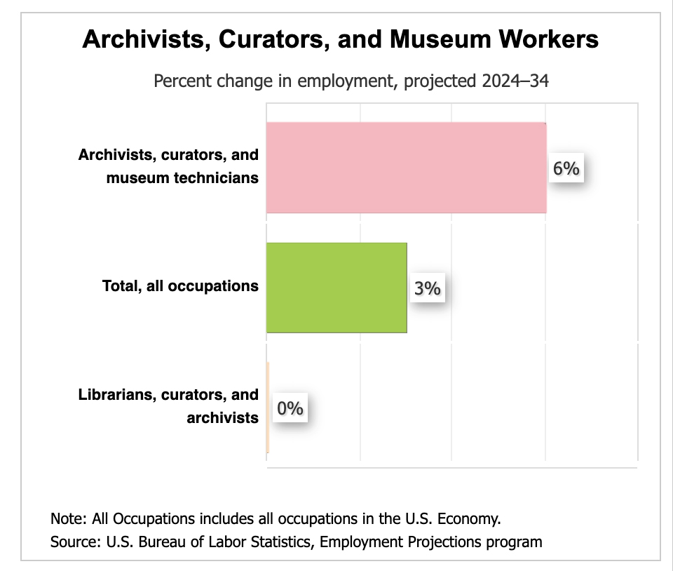

Caroline Alfonso, Veronica Luke, Maia Mislang, Sarah Neumann
INF STD 270 Winter 2026
♦♦♦
Our interview subject is the Asian Pacific American Collection Specialist at the Smithsonian’s Archives of American Art. At its core, this role deals with curation of a collection but a majority of this Archival professional’s work involves interfacing with potential and current donors, doing initial processing of new acquisitions, researching, writing grants, writing articles, answering emails, unboxing collections, rehousing them to archive safe enclosures, and much more. This role is very forward-facing, with a majority of time spent working with donors. Responsibilities include both identifying artists who are preparing to retire and wish to give their work to a larger institution, and maintaining relationships with donors who have already decided to gift their work; shaping AAPI art and visual culture for generations. Helping donors navigate donation contracts as well as helping them gain trust in working with such a large institution is an important part of their job, requiring strong interpersonal and communication skills. Our subject credits their time at a local community archive for giving them the tools needed to ethically and successfully navigate all the emotional and intellectual labor that goes into curating a collection as large and prestigious as their institution’s.
Highly educated with a Bachelor's degree in Studio Art and Art History, a Masters in Asian American History, and a PhD in Art History, this professional has both a personal and academic understanding of the material they are collecting. Most curatorial and collection specialist roles require masters degrees in a related field, with doctorates being a common accomplishment amongst competitive applicants. In addition to higher education and specific research interests, most applicants are required to have 2-5 years of experience and fluency in another language related to their specialization. Despite this field being deeply underfunded, highly competitive and currently under-threat; the preservation and promotion of histories that have too often been excluded from the dominant historical narrative is very important in this political climate, thus making the difficult entry point into the field worthwhile.
♦♦♦
A job in the world of Archives curation involves wearing a multitude of hats, including but not limited to, acquisitions, preservation, organization and providing access to historical materials. In addition to research and curation, a large portion of the work involves communicating with current and potential donors, giving tours, conducting initial processing of new acquisitions, writing grants and articles, answering emails, unboxing collections, and rehousing materials in archive-safe enclosures.
Below are job descriptions for various collection specialist/ collection curator positions:
♦♦♦
Our collections specialist was required to publish in academic journals during their academic training and as part of their position’s job requirements at the Smithsonian. Keeping in mind that our professional is focused on collecting materials created by and about Asian American, Native Hawaiian, and Pacific Islanders, these are some of the journals and professional associations our professional has contributed to.
These are more professional associations related to this position
Attending conferences is not something our interviewee particularly enjoys, so they limit their participation to the Association for Asian American Studies.
Our professional primarily engages in local, informal modes of communication with colleagues. There is a small community of people in similar positions which means that most colleagues know each other and interact in small circles. Our professional also shared that each museum belonging to the Smithsonian feels like a university. Museums have their own set of specialists and there is lots of cross-museum specialist collaboration. As such, lots of their communication is done through personal channels. Something important they shared with us is that they do not communicate or interact with work over the weekends as a way to maintain professional boundaries!
In our professional’s city, there is a writing group for art historians who specialize in Asian American Art who assign and discuss articles relevant to their professional interests. Similarly, there is an Asian American art historians group in the Bay Area.
MLIS students can find jobs in this field through the following link through the ARCS
♦♦♦
According to the Bureau of Labor Statistics, the field of Archivists, Curators, and Museum workers is increasing by 6% from 2024 to 2034. It is unclear whether this projection takes recent federal funding cuts to IMLS grants into account. Our subject noted that while the field of museum work seems to be shrinking professionally – fewer institutions have the capacity to collect new materials – the demand for archival work has increased. The archival field is in a critical space due to federal budget cuts resulting in more and more repositories closing, as well as teams getting smaller. This is ultimately resulting in the responsibilities of archivists increasing: archivists need to work as collectors and process said collections themselves, and they need to be able to work with the public in order to fill the role of a curator and archivist. Our subject specifically referenced the rise of the private archivists, otherwise known as archival consultants, hired on a project-to-project basis. Additional technical skills required of a private archivist would be managing one’s own business, as private archivists work independently from institutions.

♦♦♦
Experience with collection management systems
Knowledge of library and archives professional standards, such as:
Collections development skills (ALA)
Predicted growing demand for particular skills (from interview)
♦♦♦
♦♦♦
pooping
♦♦♦